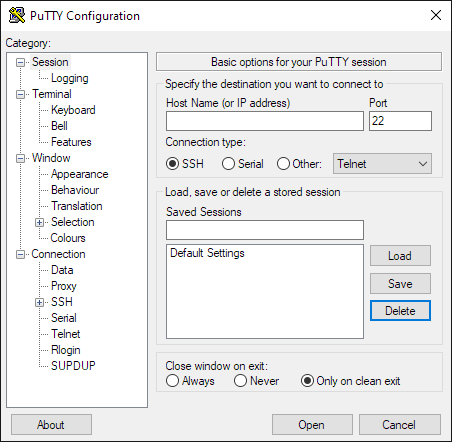

Connecting to Hyak with SSH
SSH (secure shell) is the primary method for connecting to and interacting with UW Hyak clusters from a command-line interface (CLI).
Connections to UW Hyak are authenticated with your UW NetID credentials and Duo for two-factor. Alternative login methods, including SSH key authentication, cannot be used to log in.
Use an SSH client that supports session multiplexing/sharing to reuse an active session without two-factor authentication.
Installing an SSH client
macOS, most Linux distributions, and (newer builds of) Windows 10/11 already include OpenSSH client by default.
Pick your platform and install an SSH client:
Open a terminal and install OpenSSH client with your distribution’s package manager.
| Distribution | Command |
|---|---|
| Ubuntu/Debian/Linux Mint | sudo apt-get install openssh |
| RHEL/CentOS/Fedora/Rocky | sudo dnf install openssh |
| SUSE | sudo zypper install openssh |
| Alpine | apk add openssh |
| Arch | sudo pacman -S openssh |
To set up session sharing, create a new host entry to your local computer’s ~/.ssh/config with a text editor:
~/.ssh/config
Host klone.hyak.uw.edu
HostName %h
ControlPath ~/.ssh/%r@%h:%p
ControlMaster auto
ControlPersist 3600macOS provides OpenSSH by default. It is accessible from the command line with Terminal.app.
To set up session sharing, create a new host entry to your local computer’s ~/.ssh/config with a text editor:
~/.ssh/config
Host klone.hyak.uw.edu
HostName %h
ControlPath ~/.ssh/%r@%h:%p
ControlMaster auto
ControlPersist 3600There are many SSH clients available for the Windows platform. Here is a short table comparing features provided by each SSH client:
Feature Comparison of Windows SSH Clients
| SSH Client | Port-Forwarding | X11 | Session Sharing | Interface | File Transfer Interface |
|---|---|---|---|---|---|
| Win32-OpenSSH | Supported | Requires X11 Server[^x11] | Unsupported | CLI | CLI |
| MobaXterm | Supported | Supported | Unsupported | GUI/CLI | GUI/CLI |
| PuTTY | Supported | Requires X11 Server[^x11] | Supported | GUI | CLI |
| MSYS2+OpenSSH | Supported | Requires X11 Server[^x11] | Unsupported | CLI | CLI |
| WSL2+OpenSSH | Supported | Supported | Supported | CLI | CLI |
PuTTY’s plink.exe tool is not suited for interactive sessions as it cannot handle many key inputs (arrow keys for cursor movement, backspace for character deletion).
Check Share SSH Connection if possible in the PuTTY Configuration window under Connection->SSH:

Save a PuTTY profile under Session with the hostname set to UWNetID@klone.hyak.uw.edu:
While PuTTY maintains an active session with session sharing enabled, all (GUI/CLI) PuTTY tools can reuse the active authenticated session as long as the terminal window remains open and active. If all sessions close, authentication will be required.
To create a new terminal window, right-click the title bar of an active terminal window, then click on Duplicate Session.
To reuse an active session with CLI tools, specify the name of the saved PuTTY profile in place of UWNetID@klone.hyak.uw.edu.
Connecting via SSH
- Open a terminal instance.
Windows users should open the PowerShell console or install and use Windows Terminal from the Microsoft Store app.
- Connect to Hyak Klone cluster with
sshcommand with your UW NetID:
ssh UWNetID@klone.hyak.uw.edu- If prompted to “continue connecting,” type
yesand press enter. - Login with your NetID password and authenticate with Duo.
If successful, the login node’s command prompt should appear.
- Open PuTTY:

- Check Share SSH Connection if possible under Connection->SSH:
- Under Session, set the hostname to
UWNetID@klone.hyak.uw.eduand save the profile asKlone:
Press Open at the bottom of the configuration window to start the connection.
Login with your NetID password and authenticate with Duo.
If successful, the login node’s command prompt should appear.
- Open MobaXterm:

Click the Session icon in the top left corner.
Select SSH under the Session settings window, then do the following:
- set the remote host to
klone.hyak.uw.edu - check Specify username and specify your UW NetID

Press OK at the bottom of the window to start the connection.
Press Accept if prompted to trust the identity of the remote host:

- Login with your NetID password and authenticate with Duo.
If successful, the login node’s command prompt should appear.
Transferring files to/from Hyak
scp is an OpenSSH client utility for copying files and directories to/from a remote target. The general syntax has the following form:
scp [-r] <SOURCE_PATH> UWNetID@klone.hyak.uw.edu:<DESTINATION_PATH>
scp [-r] UWNetID@klone.hyak.uw.edu:<SOURCE_PATH> <DESTINATION_PATH>To copy a file to Klone at some path, run:
scp /path/to/my/file UWNetID@klone.hyak.uw.edu:/gscratch/mylab/pscp is a CLI utility (provided by a standard PuTTY installation) for copying files.
pscp [-r] <SOURCE_PATH> UWNetID@klone.hyak.uw.edu:<DESTINATION_PATH>
pscp [-r] UWNetID@klone.hyak.uw.edu:<SOURCE_PATH> <DESTINATION_PATH>pscp does not support the use of the tilde (~) as a shortcut to the home directory. By default, relative paths always start from home directory.
# copy file to home directory
pscp.exe "c:\path\to\my\file" UWNetID@klone.hyak.uw.edu:pscp can reuse/share an active SSH connection without re-authorization if using a saved PuTTY profile with Share SSH Connection if possible enabled.
To send a file to Klone at some path, run:
pscp.exe "c:\path\to\my\file" UWNetID@klone.hyak.uw.edu:/gscratch/mylab/Alternatively, we can use the name of the saved PuTTY profile (Klone for this example) to reuse an active connection to copy a file to Klone:
pscp.exe "c:\path\to\my\file" Klone:/gscratch/mylab/To copy a directory to Klone, use the -r argument to copy directories and files recursively:
pscp.exe -r c:\path\to\my\directory\ Klone:/gscratch/mylab/